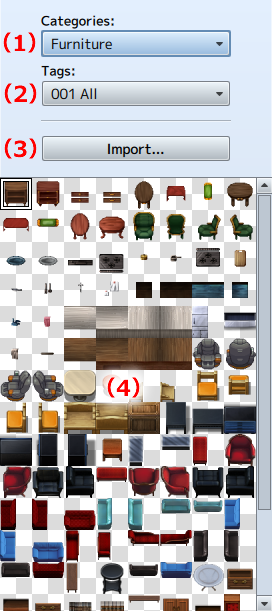
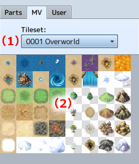
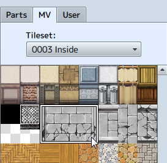
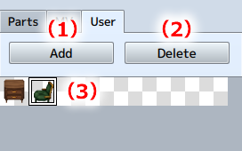

Palette
Select parts to stamp with the stamp tool. Select parts from the palette when exporting, as well.
Parts Palette (Updated 11/30/2017)
Use parts included in this software. Choose type of part in [Category] and [Tag], then select parts to use from those displayed and they will be displayed on the central editing screen.

- (1) Categories
- Select a parts category.
- (2) Tags
- Filter parts even further with tags in the category selected in (1).
- (3) Import
-
An image can be selected and imported as parts. Imported images can (1) be displayed under the category [Import]. Also (2) tags can be used to narrow down the parts based on the image name.
Imported images should be no less than 48x48 or more than 768x768 pixels in size and saved in the PNG format.
[Import Folder]
- Mac:
- /Users/UserName/Library/Application\ Support/KADOKAWA/TilesetBuilder/Parts/Imported
- Win:
- c:\Users\UserName/AppData/Local/KADOKAWA/TilesetBuilder/Parts/Imported
- (4) Parts
- Displays tagged parts from the category selected in (1) and (2).
MV Palette
Uses the same images as the tileset included in MV.

- (1) Tileset
- Select tileset.
- (2) Tileset Image
- Displays a summary of the tileset images selected in (1).
- Specify Tile Range
-
In MV, the range of palette tiles can be specified by dragging. (*Normal tiles only.)

User Palette
Registers stamps created using this software. Please register stamps in the user palette before exporting on the editing screen.

- (1) Add
- Registers created stamps. Stamps currently displayed on the editing screen are registered.
- (2) Delete
- Deletes stamps selected in (3).
- (3) Stamps
- Displays a summary of added stamps.